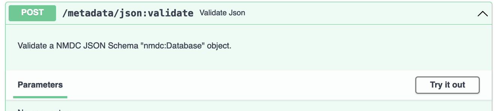
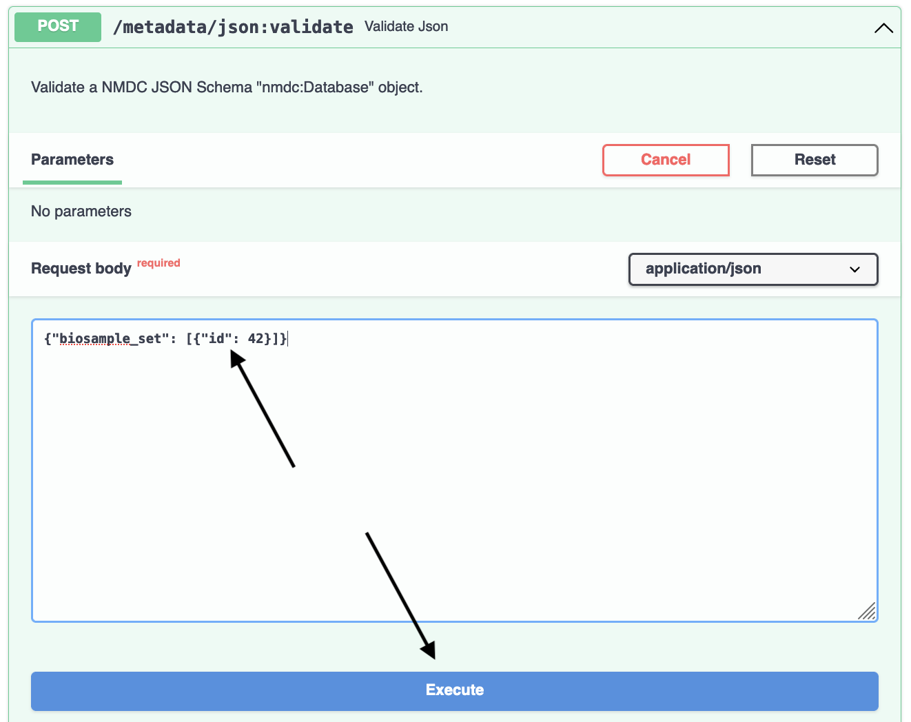
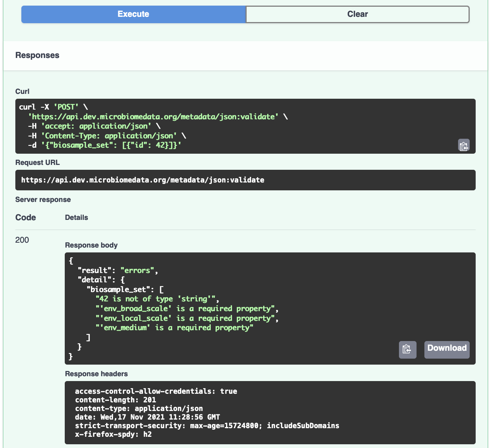
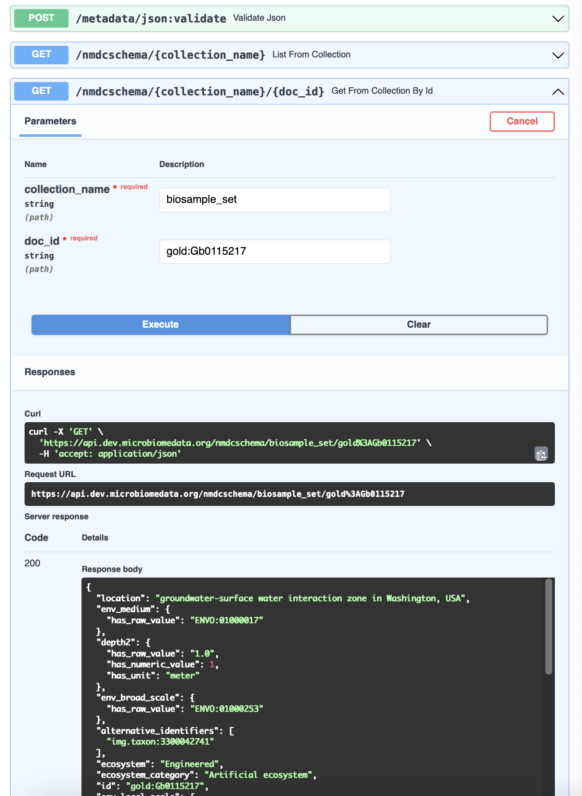
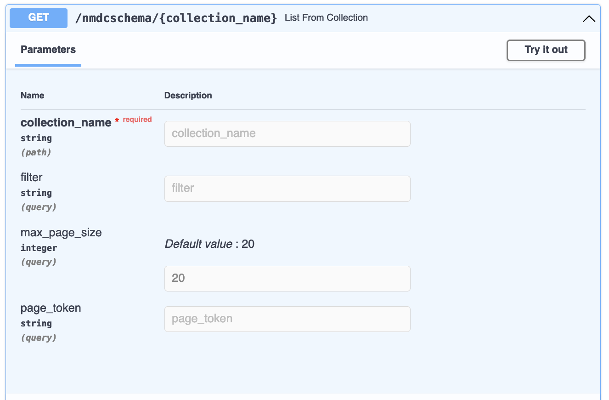
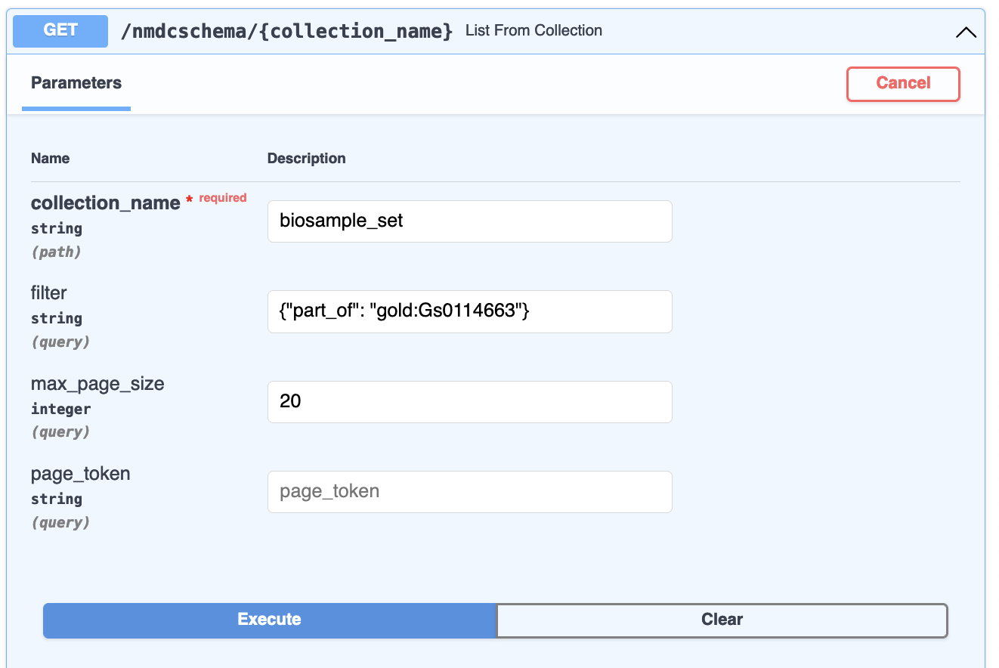
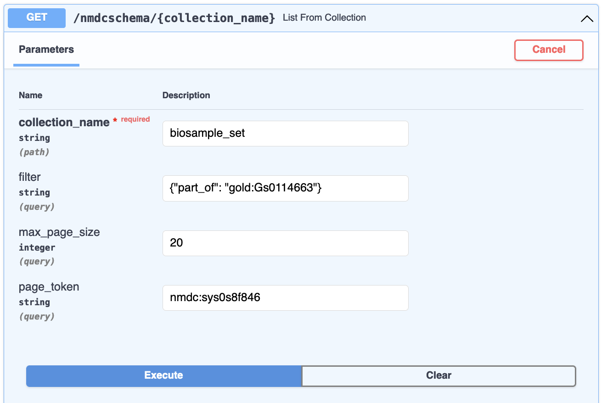

Validate JSON and Fetch JSON¶
Let's dive in and get acquainted with the NMDC Runtime API.
Validate JSON¶
Already? Yes. Let's do this. Here is a tiny nmdc:Database JSON object:
{"biosample_set": [{"id": 42}]}
This represents a set of nmdc:Biosample
objects. There is just one, with an id of 42.
Let's validate it. Go to the POST /metadata/json:validate endpoint at https://api.dev.microbiomedata.org/docs and click "Try it out":

Now, copy the above JSON object, paste it into the Request body field, and hit Execute:

This gives us a response where the result is "errors". Looks like a biosample id needs to be a
string value, and we are missing required properties. We also get a display of a curl command
to reproduce the request on the command line:

Let's see what a "valid" response looks like. The GET /nmdcschema/{collection_name}/{doc_id} endpoint allows us to get the NMDC-schema-validated JSON object for one of the NMDC metadata collections:

For example, https://api.dev.microbiomedata.org/nmdcschema/biosample_set/gold:Gb0115217 is
{
"location": "groundwater-surface water interaction zone in Washington, USA",
"env_medium": {
"has_raw_value": "ENVO:01000017"
},
"depth2": {
"has_raw_value": "1.0",
"has_numeric_value": 1,
"has_unit": "meter"
},
"env_broad_scale": {
"has_raw_value": "ENVO:01000253"
},
"alternative_identifiers": [
"img.taxon:3300042741"
],
"ecosystem": "Engineered",
"ecosystem_category": "Artificial ecosystem",
"id": "gold:Gb0115217",
"env_local_scale": {
"has_raw_value": "ENVO:01000621"
},
"community": "microbial communities",
"mod_date": "2021-06-17",
"ecosystem_subtype": "Unclassified",
"INSDC_biosample_identifiers": [
"biosample:SAMN06343863"
],
"description": "Sterilized sand packs were incubated back in the ground and collected at time point T2.",
"collection_date": {
"has_raw_value": "2014-09-23"
},
"ecosystem_type": "Sand microcosm",
"sample_collection_site": "sand microcosm",
"name": "Sand microcosm microbial communities from a hyporheic zone in Columbia River, Washington, USA - GW-RW T2_23-Sept-14",
"lat_lon": {
"has_raw_value": "46.37228379 -119.2717467",
"latitude": 46.37228379,
"longitude": -119.2717467
},
"specific_ecosystem": "Unclassified",
"identifier": "GW-RW T2_23-Sept-14",
"GOLD_sample_identifiers": [
"gold:Gb0115217"
],
"add_date": "2015-05-28",
"habitat": "sand microcosm",
"type": "nmdc:Biosample",
"depth": {
"has_raw_value": "0.5",
"has_numeric_value": 0.5,
"has_unit": "meter"
},
"part_of": [
"gold:Gs0114663"
],
"ncbi_taxonomy_name": "sediment metagenome",
"geo_loc_name": {
"has_raw_value": "USA: Columbia River, Washington"
}
}
Now, copying and paste the above into the request body for POST /metadata/json:validate. Remember,
the body needs to be a nmdc:Database object, in this case with a single member of the biosample_set
collection, so copy and paste the {"biosample_set": [ and ]} parts to book-end the document
JSON:
{"biosample_set": [
"PASTE_JSON_DOCUMENT_HERE"
]}
Now, when you execute the request, the response body will be
{
"result": "All Okay!"
}
Hooray!
Get a List of NMDC-Schema-Compliant Documents¶
The GET /nmdcschema/{collection_name} endpoint allows you to get a filtered list of documents from one of the NMDC Schema collections:

The collection_name must be one defined for a
nmdc:Database, in the form expected by the
JSON Schema,
nmdc.schema.json.
This typically means that any spaces in the name should be entered as underscores (_) instead.
The filter, if provided, is a JSON document in the form of the
MongoDB Query Language. For example,
the filter {"part_of": "gold:Gs0114663"} on collection_name biosample_set will list biosamples
that are part of the gold:Gs0114663 study:

When I execute that query, I use the default max_page_size of 20, meaning at most 20 documents are
returned at a time. A much larger max_page_size is fine for programs/scripts, but can make your
web browser less responsive when using the interactive documentation.
The response body for our
request
has two fields, resources and next_page_token:
{
"resources": [
...
],
"next_page_token": "nmdc:sys0s8f846"
}
resources is a list of documents. next_page_token is a value you can plug into a subsequent
request as the page_token parameter:

This will return the next page of results. You do need to keep the other request parameters the same. In this way, you can page through and retrieve all documents that match a given filter (or no filter) for a given collection. Page tokens are ephemeral: once you use one in a request, it is removed from the system's memory.